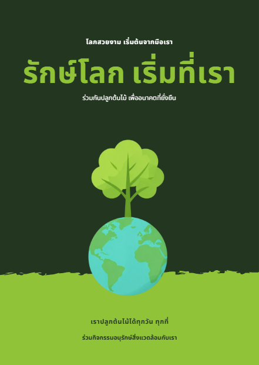
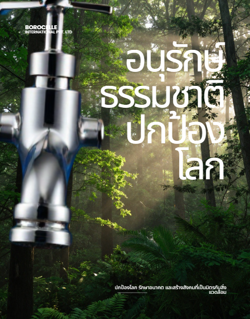
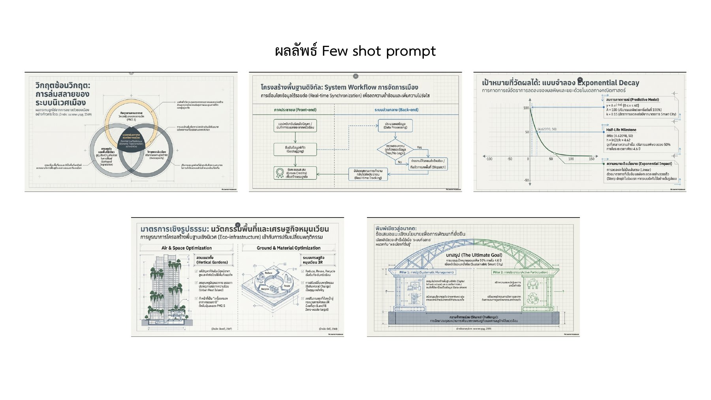

เนื้อหาที่ต้องการ
บทคัดย่อ บทนำ วิธีการ ผลการศึกษา และสรุป ครอบคลุมมลพิษ ขยะ พื้นที่สีเขียว และแนวทางอนุรักษ์ เช่น สวนแนวตั้งและการจัดการขยะ
การอนุรักษ์สิ่งแวดล้อมในเมือง
สำรวจว่าบริบท ตัวอย่าง และข้อกำหนด เปลี่ยนผลลัพธ์ของ AI ได้อย่างไร ผ่านการเรียนรู้ 6 หัวข้อในโครงงาน Smart Green City

ผลงานจริงจากเอกสาร / หน้า 5แนวคิดของโครงงาน
มลพิษ ขยะ และพื้นที่สีเขียวที่ลดลง เป็นประเด็นที่เอกสารนำมาใช้ตั้งโจทย์เรื่องการอนุรักษ์สิ่งแวดล้อมในเมือง
จากโปสเตอร์สื่อสารแนวคิด สู่กราฟที่ทดลองได้ ผังที่อ่านง่าย และบทความภาษาไทย ก่อนให้ NotebookLM เชื่อมข้อมูลเป็นงานนำเสนอ Smart Green City
สรุปจากหน้า 19 และ 25–27 เนื้อหาเว็บไซต์ถอดความจากเอกสาร ส่วนภาพและหน้าสไลด์แสดงหลักฐานต้นฉบับ
AI Image / หน้า 3–5
จากคำขอโปสเตอร์ทั่วไป สู่โจทย์ที่กำหนดการใช้งานในโรงเรียนมัธยม

โจทย์ที่ปรับแล้วระบุโปสเตอร์แนวตั้ง สไตล์ minimalist โทนเขียว–ฟ้า ภาพต้นไม้และโลก ตัวอักษรอ่านง่าย สำหรับนักเรียนอายุ 12–18 ปี
บทเรียนจากหน้า 5: การระบุบริบทปลายทางช่วยควบคุมทิศทางงานออกแบบและลดรอบแก้ไข
Desmos / หน้า 7–9
หน้า 8 เปลี่ยนกราฟเป็นแบบจำลองโต้ตอบ โดยใช้ y = A · e−kt และจุดครึ่งชีวิต ทดลองปรับค่าเพื่อสังเกตสิ่งที่เปลี่ยนไป
แบบจำลองเพื่อการเรียนรู้ ไม่ใช่ข้อมูลตรวจวัดหรือคำพยากรณ์ของเมืองจริง ช่วง slider เป็นช่วงทดลองของเว็บไซต์
เพิ่ม k → ครึ่งชีวิตสั้นลง
เปลี่ยน A → ปริมาณเปลี่ยน
แต่ครึ่งชีวิตคงเดิม
Mermaid / หน้า 11–15
Zero-shot มี decision node และ error loop อยู่แล้ว ส่วน Few-shot เพิ่ม subgraph และใช้สีแยกสถานะ เพื่อช่วยให้อ่านผังง่ายขึ้น
ผังสรุปบทเรียนจากหน้า 15 จัดทำสำหรับเว็บไซต์
หน้า 11–14 ใช้ระบบสั่งซื้อออนไลน์เป็นแบบฝึกหัด Mermaid จึงแสดงในฐานะหลักฐานการเรียนรู้ ไม่ใช่ผังระบบสิ่งแวดล้อม
LaTeX / Overleaf / หน้า 17–21
ข้อกำหนดสองด้านที่ต้องมาพร้อมกันในคำสั่งสร้างบทความภาษาไทย
บทคัดย่อ บทนำ วิธีการ ผลการศึกษา และสรุป ครอบคลุมมลพิษ ขยะ พื้นที่สีเขียว และแนวทางอนุรักษ์ เช่น สวนแนวตั้งและการจัดการขยะ
article ขนาด A4 · XeLaTeX · fontspec · polyglossia · ฟอนต์ Loma · การอ้างอิง APA ด้วย biblatex · เลขหน้ามุมล่างขวา
หน้า 21 เน้นว่าผลลัพธ์ต้องตอบทั้ง “จะเขียนอะไร” และ “จะ compile อย่างไร”
NotebookLM / หน้า 23–27
จากการสรุปไฟล์แยกส่วน สู่การเชื่อมบทความ กราฟ Desmos และผังระบบ ภายใต้กรอบ Smart Green City พร้อมโครงสร้างงานนำเสนอที่กำหนดไว้

Prompt Lab
เลือกเครื่องมือและขั้นตอนเพื่ออ่านบทสรุป พร้อมหน้าต้นฉบับในเว็บไซต์
Presentation Viewer
การใช้ prompt ในแง่ต่าง ๆ · GE931-1
คำสั่งบางส่วนอยู่ในภาพหน้าจอ โปรดดูภาพต้นฉบับเพื่ออ่านรายละเอียดครบถ้วน